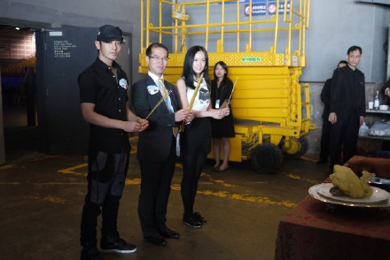
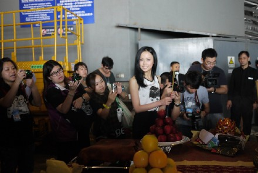

感谢周大福让我作为内地女歌手的代表来到香港和晓明哥，敬轩，李卓庭，飞轮海一起参加周大福铂金巨星夜的演唱会，香港这个地方并不陌生，之前都有来工作，《痒》也在这边发行过，张敬轩虽然是第一次见面，但一直听我最爱的石头说起他，而晓明哥之前有在上海一起拍摄过情景剧《晴天日记》，所以来到这里满有亲切感的。
不过这次是我带着自己的新专辑《特别》正式和香港的观众见面，昨天晚上演唱了《痒》《特别》《太后》，希望大家会喜欢我的《特别》，也感谢昨天晚上和我一起表演《太后》的舞蹈老师。。。今晚还有一场，祝我们圆满成功吧。。。
现在大家都爱问我对”转音歌姬”这个称号的感想
双黄和一线黄金品牌的高层

神啊，保佑我们今晚也顺利哦。。。
